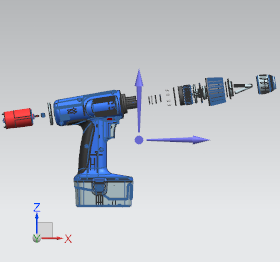
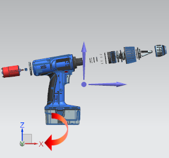
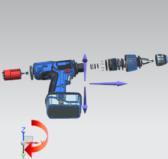
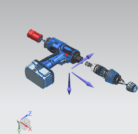
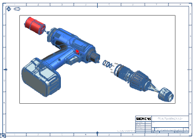

Create a custom view orientation
-
From the Model Views list, make sure Front is selected.
-
Click Customized View .

Front@3 WORK (EXPLODED) -
On the View Triad, select the X axis.

Front@3 WORK (EXPLODED) -
From the Angle list, select –45.00.

Front@3 WORK (EXPLODED) -
Select the Y axis.

Front@3 WORK (EXPLODED) -
From the Angle list, select 45.00.

Front@3 WORK (EXPLODED) -
In the Orient View Tool dialog box, click OK.

-
Click Next to advance to the Layout step.